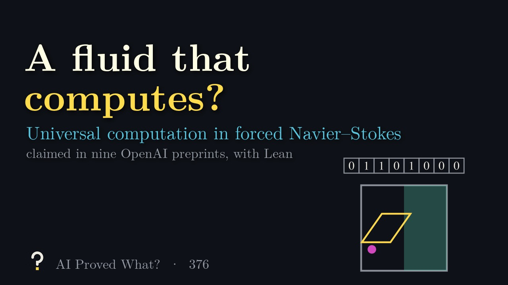
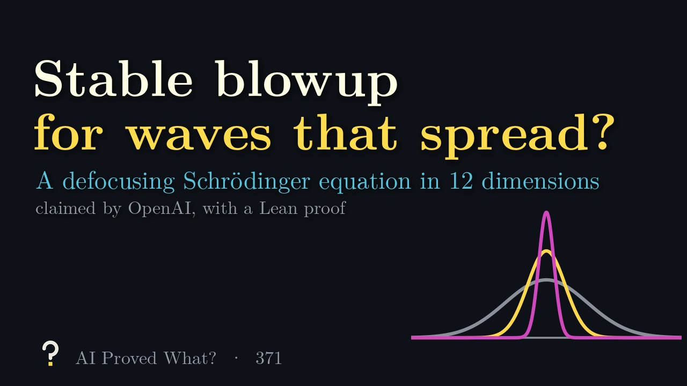

What’s new
- Beyond OpenAI’s catalogue: AX01 (Axiom Math, CFSG in Lean), PSI01–05 (PSI, Open Quantum Problems) and AN01 (Anthropic, Fermat’s Last Theorem in Lean). AI Proved What? is made with Claude, Anthropic’s AI, and holds Anthropic’s results to the same standards. Beyond OpenAI
- New episode for 079: local smoothing in every dimension. The three-dimensional episode stays listed under Versions. Episode out
- New result 378: OpenAI claims the Exponential Time Hypothesis is false, with a Lean proof. It says a working group of computer scientists led by Russell Impagliazzo, Ramamohan Paturi and Ryan Williams will examine the proof. Episode out
- Result 079 extended to every dimension, with a Lean proof. By our reading it now implies the claims of 074 and 078 and the sphere and paraboloid cases of 077. Its new episode is out. Revised
- Lean proof added for 032, the rational Hodge conjecture for CM abelian varieties. Its scope notes leave out the consequences for the Tate and Hodge standard conjectures. Lean
An AI system claims that the satisfying assignments of a k-CNF formula can be counted exactly in subexponential time and polynomial space, which would refute the Exponential Time Hypothesis.
What does that even mean, and has anyone checked? Each episode takes one claim like this, builds the intuition with animation, and keeps a running record of how far the proof has been verified.

Episode 378: The Exponential Time Hypothesis is false?, about 6 minutes.
Where this claim stands
- Posted as a preprint
- OpenAI, dated October 17 and revised October 25, 2026
- Under expert review
- An independent working group of computer scientists led by Russell Impagliazzo, Ramamohan Paturi and Ryan Williams (OpenAI’s history.md, October 26, 2026)
- Peer reviewed
- Not yet
- Checked in Lean
- OpenAI published a Lean proof of part of the claim (scope notes)
Last checked October 26, 2026. The claim has not been withdrawn. One preprint (67 pages). OpenAI says an independent working group of computer scientists led by Russell Impagliazzo, Ramamohan Paturi and Ryan Williams will examine and explain the proof. OpenAI published a Lean proof of a weaker bound; we have not run the check. Not yet peer reviewed.
Recent episodes
-
Episode 378 · 5:42
The Exponential Time Hypothesis is false?
An AI preprint claims to count k-SAT solutions in subexponential time
-
 Episode 377 · 3:52
Continuous gradients in every dimension?
An AI preprint claims interior C¹,α estimates for infinity-harmonic functions in three and more dimensions
Episode 377 · 3:52
Continuous gradients in every dimension?
An AI preprint claims interior C¹,α estimates for infinity-harmonic functions in three and more dimensions
-

Episode 376 · 4:26 A fluid that computes? Nine AI preprints claim universal computation in forced Navier–Stokes flows on a fixed flat domain -
 Episode 375 · 4:12
Only flat walls in eight dimensions?
An AI preprint claims De Giorgi’s conjecture in dimension eight and the classification of stable solutions in seven
Episode 375 · 4:12
Only flat walls in eight dimensions?
An AI preprint claims De Giorgi’s conjecture in dimension eight and the classification of stable solutions in seven
-
 Episode 374 · 3:40
One third, not one half?
An AI preprint claims sharp one-third stability of Brenier maps, disproving Letrouit's square-root conjecture
Episode 374 · 3:40
One third, not one half?
An AI preprint claims sharp one-third stability of Brenier maps, disproving Letrouit's square-root conjecture
-
 Episode 373 · 3:55
Electrons that must flip a coin?
An AI preprint claims the three-marginal Coulomb transport problem need not have an optimal map
Episode 373 · 3:55
Electrons that must flip a coin?
An AI preprint claims the three-marginal Coulomb transport problem need not have an optimal map
-
 Episode 372 · 3:56
Feel the inside from the surface?
An AI preprint claims global uniqueness for the smooth isotropic elasticity inverse problem in three dimensions
Episode 372 · 3:56
Feel the inside from the surface?
An AI preprint claims global uniqueness for the smooth isotropic elasticity inverse problem in three dimensions
-

Episode 371 · 4:29 Stable blowup for waves that spread? An AI preprint claims an open set of finite-time blowups for a defocusing Schrödinger equation on the 12-dimensional torus
Browse by subject
- Number theory31 of 31 explained
- Algebraic and complex geometry36 of 36 explained
- Real and complex analysis16 of 16 explained
- Convex and metric geometry15 of 15 explained
- Theoretical computer science41 of 41 explained
- Dynamical systems and ergodic theory12 of 12 explained
- Combinatorics37 of 37 explained
- Algebra18 of 18 explained
- Probability and statistical mechanics29 of 29 explained
- Mathematical logic6 of 6 explained
- Group theory14 of 14 explained
- Mathematical physics25 of 25 explained
- Operator algebras19 of 19 explained
- Topology18 of 18 explained
- Functional analysis11 of 11 explained
- Differential geometry29 of 29 explained
- Partial differential equations16 of 16 explained
Progress
- Explained
- 373 of 373 results (721 papers in all)
- Under expert review
- 1 result with a named review group (378)
- Lean proof published by OpenAI
- 249 of 373 results: 182 of the main theorem, 67 of part of the claim
- Peer reviewed
- 0 as of October 26, 2026
OpenAI’s 721 papers are grouped into 373 results. A result is one main claim plus any companion papers, such as alternative proofs, supporting results or consequences, and each episode explains one whole result, all of its papers included.
Beyond OpenAI’s catalogue
One-off announcements by OpenAI, and results from other labs. Same record, kept apart from the counts above.
How to read the record
Every claim gets the same four steps. A filled gold box means a step has happened; an empty box means it hasn’t yet.
- Posted as a preprint
- The proof is public
- Under expert review
- A named group is checking it
- Peer reviewed
- Refereed by mathematicians
- Checked in Lean
- Verified step by step by computer
Posted as a preprint means the lab has released a written proof anyone can read. That’s where a claim starts, not where it ends. A claim announced before its paper is public reads Announced, paper not public instead. Under expert review means a named group of experts has said it is checking the proof, and a blue box marks it; we quote who said so. Peer reviewed means independent mathematicians have refereed it, usually for a journal. Checked in Lean means the main result has been verified by Lean, a computer program that accepts a proof only when every step is justified.
When OpenAI’s published Lean proof covers only part of a claim, the box stays empty and the record says so. In lists, a half-filled box marks these.
If a claim is withdrawn, its box turns red and the episode stays up, clearly marked. Mistakes are part of the story.